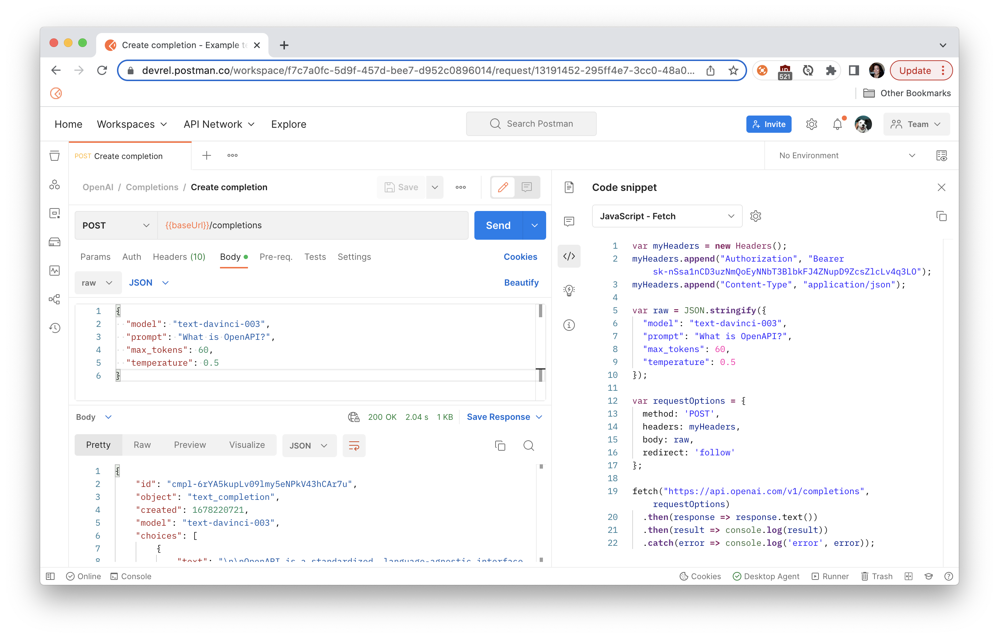

This is a beginner's introduction to OpenAI's API in Postman. Make your first API request to simulate a ChatGPT query.

Prerequisites
What You'll Learn
- Discover different AI models provided by OpenAI
- Authorize and send HTTP API requests
- Use variables to store and reuse information
What You'll Build
- A Postman Collection with authorized API requests.
- Code samples to integrate into your own bots or applications.
- Sign in to your Postman account.
- Select the Run in Postman button below to fork the public collection to your own workspace.

- Enter a label for your fork, and select a workspace to save it to.

If you leave the checkbox selected to Watch original collection, you will receive notifications when new endpoints are added to the collection.
Update the collection variable token with your own OpenAI API key.
- On the API Keys page of the OpenAI website, create a new API key under API Keys >
+ Create new secret key, and then copy the key to your clipboard for the next step.
- In Postman, select your fork of the OpenAI collection.
- Under the Variables tab, create a new collection variable
tokenand paste the value of your API key.
- Select Save.
You can look under the Authorization tab and see how Postman will now add an Authorization header with your API key to every request in the collection, unless otherwise specified. Look under the Headers tab of any request to see for yourself. You may need to un-hide the auto-generated headers.

To change the way Postman configures the authorization, you can update the settings under the Authorization tab of the request, folder, or collection.
This example uses the Completions API and the text-davinci-003 artificial intelligence model to to perform a query similar to what you can do on the ChatGPT website.
To create a query:
- In your Postman workspace, navigate to your fork of the OpenAI collection.
- Select
Completions>Create completion. Under the Body tab, add a request body formatted like the following example:{ "model": "text-davinci-003", "prompt": "What is OpenAPI?", "max_tokens": 60, "temperature": 0.5 } - Click Send to see a response body like the following example:
{ "id": "cmpl-6rYA5kupLv09lmy5eNPkV43hCAr7u", "object": "text_completion", "created": 1678220721, "model": "text-davinci-003", "choices": [ { "text": "\n\nOpenAPI is a standardized, language-agnostic interface to RESTful APIs which allows both humans and computers to discover and understand the capabilities of the service without any prior knowledge of how the service works. It uses a language-agnostic interface definition to describe the capabilities of an API, which", "index": 0, "logprobs": null, "finish_reason": "length" } ], "usage": { "prompt_tokens": 5, "completion_tokens": 60, "total_tokens": 65 } }
Upon a successful 200 OK response, you can inspect the response body, including the property choices which contains text responding to the query.

Negative : Be careful hitting Send too many times, since you might reach OpenAI rate limits if you're on a free account.
Now that you have the API request working the way you want it to, let's generate code so we can use the API in our own applications.
- Select the request you want to use for a code snippet, then select the code icon in the right pane.
- Select a language or framework from the dropdown list. 
- Select the copy icon to copy the code snippet to your clipboard.
You can now paste this code into your own applications or bots.
What we've covered
- Fork the OpenAI collection to your own workspace
- Discover different AI models provided by OpenAI
- Authorize and send HTTP API requests
- Use variables to store and reuse information for authorization
Now that you made your first call with the OpenAI API, continue exploring the other endpoints in the OpenAI collection and other artificial intelligence models.
Additional resources
To continue your journey with OpenAI, here are some additional resources to check out.
- Review the OpenAI API introduction
- Try other OpenAI models